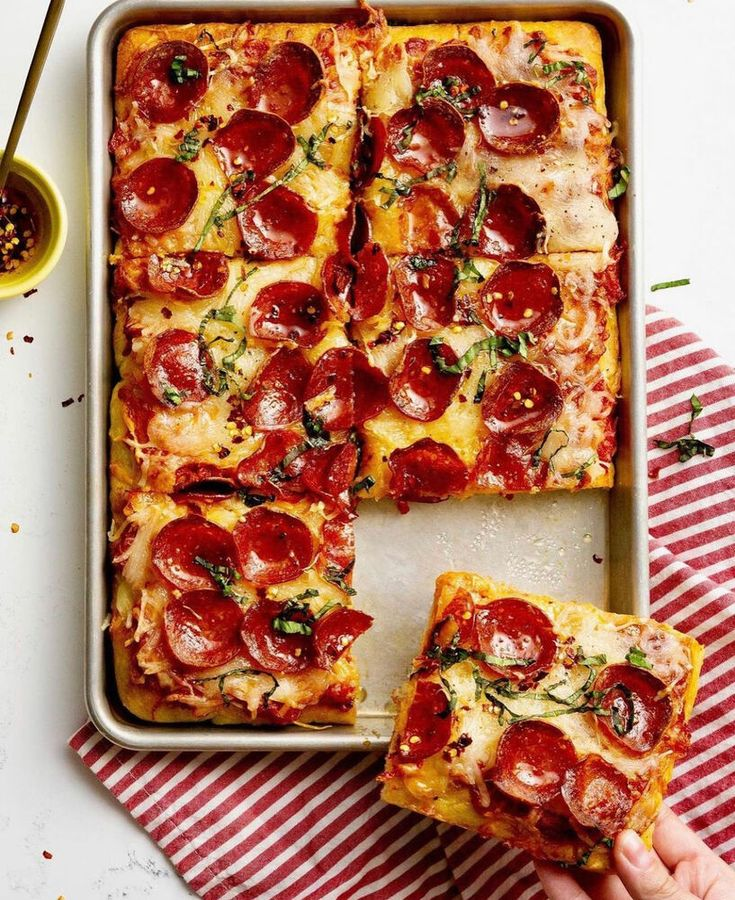

Pizza Pepperoni!

Pepperoni is one of the most popular pizza toppings. Salty, fatty, and full-flavored, this thinly sliced American salami is typically used for pizza, but sandwiches and wraps are also delicious when stuffed with this tasty cured meat. Created by Italian immigrants in the United States, pepperoni is reminiscent of the salamis of southern Italy.
Ingredients
Steps
- Roll out dough on a lightly floured surface. Use a rolling pin to roll out the dough into 12” diameter or as big as you want depending on how thick you want the pizza crust.
Sprinkle a tiny bit of semolina over a pizza pan or cast-iron skillet for an easy release.
- Place the dough on a pizza pan. The dough might retract. Oil the tip of your fingers, and gently stretch the dough pulling outwards towards you. Use the tip of a fork to prick the dough slightly, careful not to poke through the dough.
Brush the edge of the dough with extra virgin olive oil
Next, preheat the oven to 450°F
- Using the back of a spoon, spread the pizza sauce onto the dough, leaving about an inch of crust around the edges. Add a tablespoon at a time
Add the pepperoni, top with the fresh and shredded mozzarella ( (pat dry any excess liquid). Add the onion, peppers, and jalapenos. Sprinkle a pinch of salt and black pepper.
- Bake for 12 -15 minutes, or until the crust is browned. Remove from the oven and finish it off with fresh basil leaves. Drizzle with a tiny bit of extra-virgin olive oil. Slice, and serve.